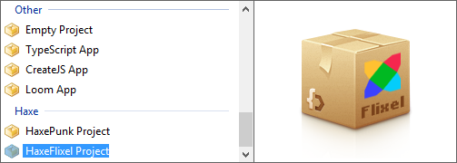
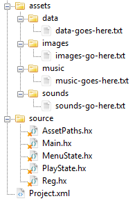

HaxeFlixel is another popular 2D game framework for Haxe and OpenFL.
Just like HaxePunk, HaxeFlixel is an open-source library and a successor to an AS3 game framework called Flixel.
In this tutorial I'll show you how to install HaxeFlixel and create new projects using this frameworks.
Obviously, you'll need to have Haxe and OpenFL installed before you proceed. If you don't have those yet, follow this guide on getting started with Haxe and OpenFL.
There are several ways to install HaxeFlixel.
One way is to grab the latest stable code from the official download page.
If you're looking for development builds with all the latest updates, check out the GitHub repository.
The easiest and the most recommended way, however, is to use the haxelib command tool. Installing HaxeFlixel using haxelib is done by downloading a package called flixel-tools.
Use the following commands:
haxelib install flixel-tools
haxelib run flixel-tools setupThis will download and install all the necessary flixel core files, as well as offer to download demos and templates.
You can also download the templates separately here.
You can use any of the supported IDEs, I recommend FlashDevelop. After installing the HaxeFlixel template it will show up in the Project/New Project menu:
Creating a new project using a HaxeFlixel template in any IDE will create a directory with a number of files. The project tree should look like this:
You'll notice a number of classes in the src folder, as well as a project.xml file in the root.
This file is the descriptor where you can setup different application settings, including the app title and window size. All the imported libraries have to be listed here as well. You'll notice that HaxeFlixel is included as the default library.
The main document class of the project is the Main.hx file. Here you can change some of the initialization variables, but the rest of the code will in most cases remain unchanged.
HaxeFlixel employs a state machine. This means that the user can see one state at a time, and it is possible to easily switch from one state to another. This way you can have separate states for the main menu and actual game screen.
In fact, both of these scenarios are already pre-configured for you - you'll find that the MenuState and PlayState classes are made specifically for that purpose.
HaxeFlixel also creates a Reg class for you, which can store global objects for easy access. You can access these objects from any class, since they are static variables.
Of course, since this library is built on top of OpenFL, you can use all the OpenFL goodies like the Assets class. HaxeFlixel template creates an assets directory for you to store images, music, sounds and raw data.
We will take a closer look at the most important aspects of this library in my next tutorial series, where I will show you how to create an RPG using HaxeFlixel.